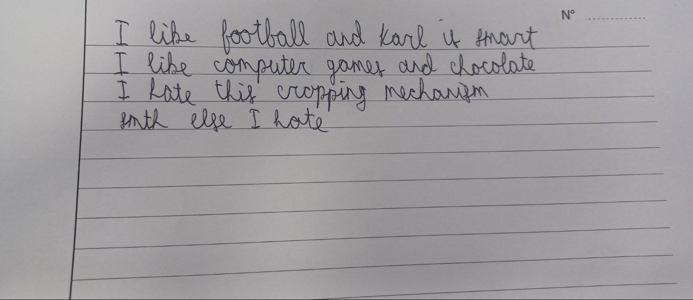

Image Quality Checker

Are you satisfied with the quality of the taken image?
Yes
Reload the image
No
After removing the background:
After cropping the preprocessed image on lines:
❓
Recrop
If you are satisfied with the image processing we can continue to the extraction
Choose the device to run models on:
GPU
TPU
Metal
CPU
Retake the picture
You can modify the extracted text here:
Check Syntax and Grammar
Retake the photo
Original Text
Syntax Fixed Text
Grammar Fixed Text
Back to the extraction step
Start From the beginning